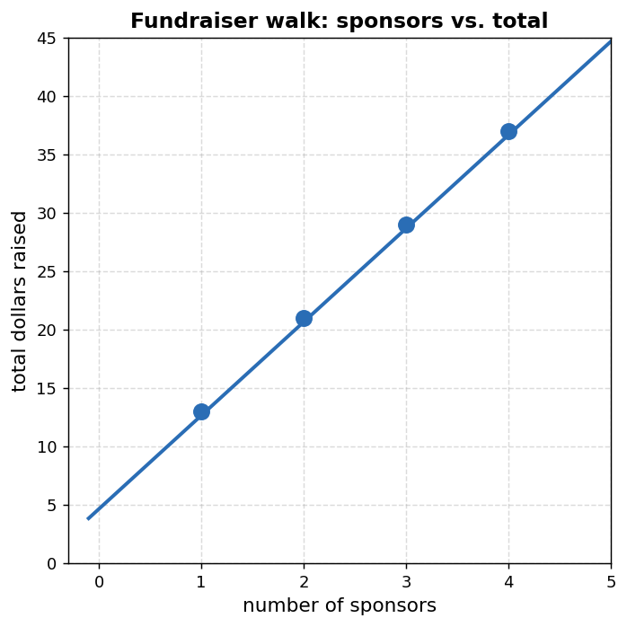
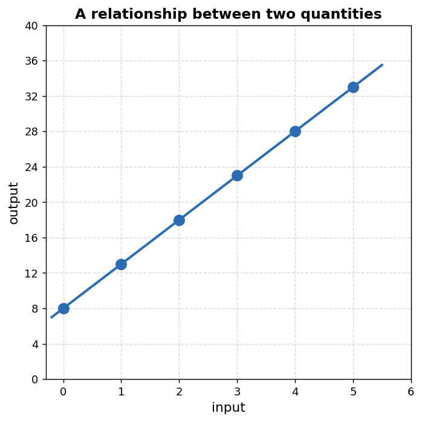
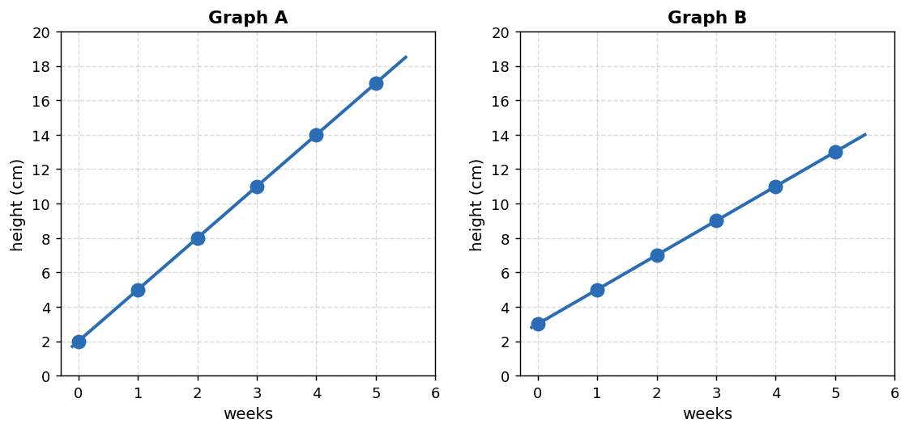
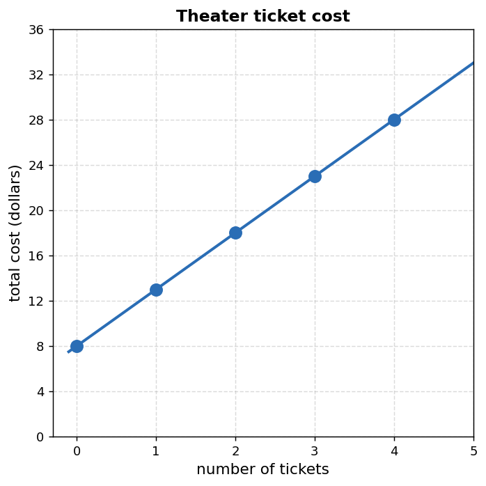
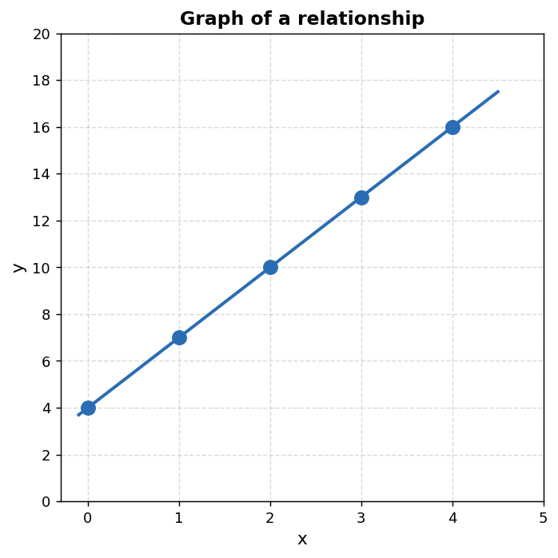
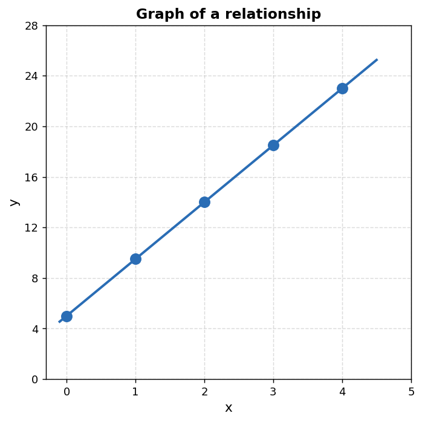
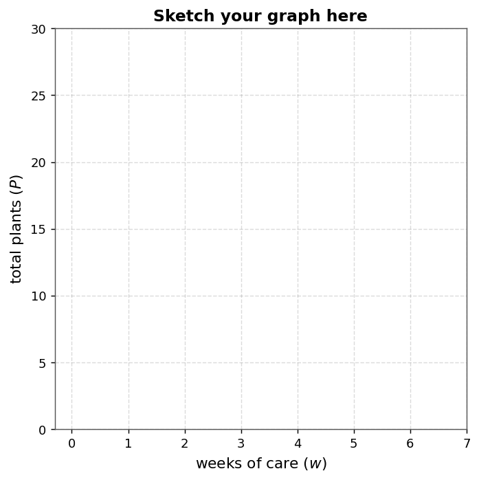
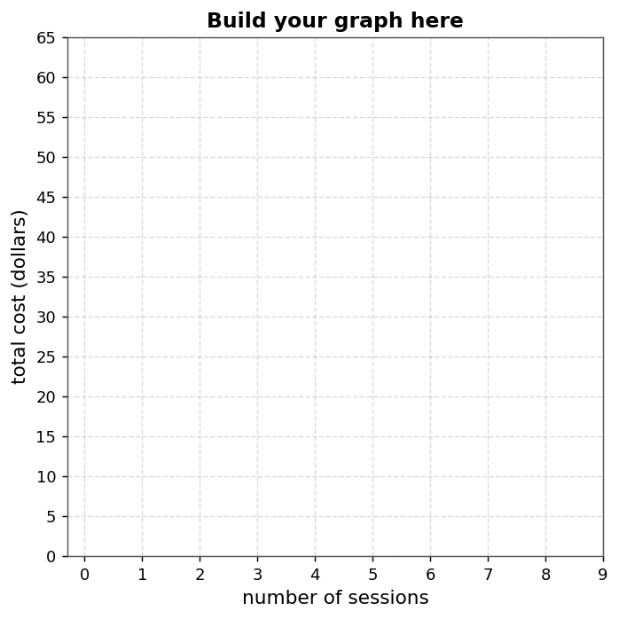

Mathematical idea: A representation is not just a picture or a rule. It is evidence about how two quantities are connected — and evidence can be checked, challenged, and compared.
Today we will practice identifying representations, deciding what evidence they provide, and judging whether multiple representations describe the same relationship.
Students will connect tables, graphs, equations, and contexts that represent the same relationship.
I can statements
This is a long-range preview for future lessons. Do not solve it today. Instead, annotate it individually. Circle anything familiar, underline symbols or directions that seem important, and write notes about what information you think will be needed later.
As you annotate, ask yourself: Do all four parts seem to tell the same story? Where do you see a possible conflict? What would you need to check to be sure?
Future Task — Representations in Conflict
A school is organizing a charity walkathon. A student creates four representations to track the total amount raised. Another student says, "Something doesn't match. I can't tell which one is wrong."

| Sponsors ($s$) | 1 | 2 | 3 | 4 |
|---|---|---|---|---|
| Total raised ($T$) | 13 | 21 | 29 | 37 |
$$T = 8s + 4$$
Each sponsor pledges \$8. There is also a one-time registration fee of \$5.
Directions
Read the introduction aloud with a partner or in a small group. As you read, annotate the text by highlighting important ideas, circling key vocabulary, and writing short notes about connections, questions, or predictions in the margins.
A relationship describes how two quantities are connected. For example, the total cost of tickets is connected to the number of tickets bought. The distance a person walks is connected to the time spent walking. In each case, one quantity changes, and the other quantity changes along with it.
Mathematicians use different representations because each one makes certain information easier to see. A table shows specific values and ordered pairs. A graph shows the overall shape and pattern. An equation shows a general rule that can generate new values. A context explains what the numbers actually mean in a real situation.
No single representation tells the whole story. A graph shows a pattern but may not show what the variables mean. A context explains the situation but may not show exact values clearly. An equation is efficient but can feel disconnected until we interpret each part.
When we decide whether representations match, we use evidence. We check whether the same ordered pairs appear, whether the starting value is the same, whether the rate of change is consistent, and whether labels, units, and meaning are aligned. A match is not based on how things look at first glance — it is based on what the mathematics actually shows.
Stop and Discuss
A relationship between two quantities can often be shown in several ways. Each representation answers a different kind of question.
Shows specific input-output pairs. Useful for checking exact values and reading the starting value and rate of change directly.
Shows the visual pattern across the whole relationship. Useful for seeing trends, comparing quantities, and reading approximate values.
Shows a rule that works for any input value. Useful when we need to calculate values not already in a table or visible on a graph.
Shows what the numbers actually mean. Useful for interpreting units, understanding variables, and deciding whether an answer makes sense.
The graph shows a relationship between two quantities. Both axes are unlabeled.

Two students propose different contexts. Decide which context is the better match.
Both contexts have the same starting value. What evidence must you use to tell them apart? Name the specific part of the graph that provides that evidence.
A plant starts at 2 cm tall and grows 3 cm each week.

When comparing representations, do not rely on a quick impression or the overall direction. Look for mathematical evidence.
Evidence sentence frame: These representations match because __________, and another piece of evidence is __________.
A theater charges a starting fee plus a cost per ticket. The graph and table are shown.

| Tickets ($t$) | 0 | 1 | 2 | 3 | 4 |
|---|---|---|---|---|---|
| Total cost ($C$) | 8 | 13 | 19 | 23 | 28 |
A delivery service posts this equation: $C = 9m + 3$, where $C$ is total cost in dollars and $m$ is miles driven.
Context: The company charges a flat fee of \$3 plus \$9 for each mile driven.
Stop and Discuss
A student says, "The table and graph both go up, so they must represent the same relationship." What is wrong with that reasoning, and what should the student check instead?
When someone makes a claim about representations, you have three possible responses. Decide which one is supported by the evidence you actually have.
The goal is not to be right quickly. The goal is to name your evidence and say exactly what it shows.
A student claims the graph, table, and equation all represent the same relationship.

| $x$ | 0 | 1 | 2 | 3 |
|---|---|---|---|---|
| $y$ | 4 | 7 | 9 | 13 |
Equation: $y = 3x + 4$
A student says the graph below matches the equation $y = 4x + 5$.

When you create a representation that is missing, you are not just copying numbers. You must make decisions that keep the same mathematical relationship.
Check question: Does your new representation tell exactly the same story, or did you accidentally change something?
A community garden program starts each plot with 5 plants and adds 4 new plants per week of care.
| Weeks of care ($w$) | 0 | 1 | 2 | 3 | 4 |
|---|---|---|---|---|---|
| Total plants ($P$) | 5 | 9 | 13 | 17 | 21 |

A tutoring service charges a one-time registration fee of \$6 plus \$5 per session.

Tables, graphs, equations, contexts, and verbal descriptions can all represent the same relationship. Each representation reveals different information, so strong mathematical reasoning uses more than one representation as evidence.
To decide whether representations match, check ordered pairs, starting values, rates of change, labels, units, and the meaning of the quantities. A match should be supported by evidence across multiple representations, not just appearance or direction.
Creating a new representation is not just copying — it requires identifying the same starting value, rate of change, and meaning in the new form.
Look back at the future task. Do not solve it yet. Highlight one part that makes more sense now than it did at the beginning. Circle one part that still feels unfamiliar. Write one sentence about what representation you would look at first to begin resolving the conflict.